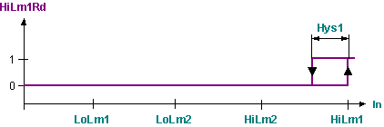
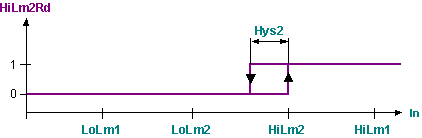
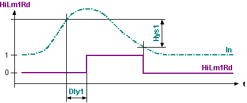

[LIMIT_R] Limit of real value
LIMIT_R limits a real value to two upper and two lower limit values.
Functioning
LIMIT_R limits the value at input [In] to the upper limit 1 [HiLm1], the lower limit 1 [LoLm1], the upper limit 2 [HiLm2], and the lower limit 2 [LoLm2].
When the respective limits are reached or exceeded, the associated outputs [HiLm1Rd], [LoLm1Rd], [HiLm2Rd], and [LoLm2Rd] are set. The output is reset as soon as the limit +/- hysteresis is no longer reached. The hysteresis can be parameterized separately for limit value pair 1 [Hys1] and for limit value 2 [Hys2].
The limit value supervisions are enabled via input [EnFnct] = 1. With [EnFnct] = No, the outputs are switched off and the times reset.
Limit value supervision can have time delays. The associated outputs are set only if the limit value violation exceeds the parameterized delay time. [Dly1] then applies to limit value pair 1 and [Dly2] to limit value pair 2. The outputs are reset without delay.
Default setting
Even though the individual limits can be used and arranged as needed, limit value pair 2 normally is used for large deviations from the normal value (e.g. as a danger limit), and limit value pair 1 for slight deviations from the normal value (e.g. warning limit). The following order then results: [LoLm2] < [LoLm12] < Normal value < [HiLm1] < [HiLm2].
The following figures show the response without time delay (Dly1 = Dly2 = 0 sec).
Response of output [HiLm1Rd]

Response of output [HiLm2Rd]

Response of output [LoLm2Rd]

Response of output [LoLm1Rd]

Time-related response of [HiLm1Rd] at given response of [In]

Pins
Input | Description | Data type | Default value |
|---|---|---|---|
|
EnFnct | Enable function Enables the function. | Boolean | 1 |
0 - The function is disabled. | |||
|
In | Input | Real | 0.0 |
|
HiLm2 | High limit 2 Default value for the upper limit of limit value pair 2. | Real | 0.0 |
|
HiLm1 | High limit 1 Default value for the upper limit of limit value pair 1. | Real | 0.0 |
|
LoLm1 | Low limit 1 Default value for the lower limit of limit value pair 1. | Real | 0.0 |
|
LoLm2 | Low limit 2 Default value for the lower limit of limit value pair 2. | Real | 0.0 |
|
Hys1 | Hysteresis 1 A violation of the upper limit 1 is reset if [In] < [HiLm1] - [Hys1]. A violation of the lower limit 1 is reset if [In] > [LoLm1] + [Hys1]. | Real | 0.0 |
|
Hys2 | Hysteresis 2 A violation of the upper limit 2 is reset if [In] < [HiLm2] - [Hys2]. A violation of the lower limit 1 is reset if [In] > [LoLm2] + [Hys2]. | Real | 0.0 |
|
Dly1 | Delay control limits 1 The outputs [HiLm1Rd] and [LoLm1Rd] are set only if the limit value violation exists for more than [Dly1]. | Time | 0 ms |
|
Dly2 | Delay control limits 2 The outputs [HiLm2Rd] and [LoLm2Rd] are set only if the limit value violation exists for more than [Dly2]. | Time | 0 ms |
Output | Description | Data type | Default value |
|---|---|---|---|
|
HiLm2Rd | High limit 2 reached The upper limit 2 was reached or exceeded for more than [Dly2]. | Boolean | 0 |
0 - No | |||
|
HiLm1Rd | High limit 1 reached The upper limit 1 was reached or exceeded for more than [Dly1]. | Boolean | 0 |
0 - No | |||
|
LoLm1Rd | Low limit 1 reached | Boolean | 0 |
0 - No | |||
|
LoLm2Rd | Low limit 2 reached The lower limit 2 was reached or violated for more than [Dly2]. | Boolean | 0 |
0 - No | |||
Application
LIMIT_R is used for limit value supervision of measured values with 2 limit value pairs for control tasks. Subsequent alarm blocks also allow for conducting alarm supervision tasks.
Process response
During startup, all old values and present delays are reset. This means that the outputs are set only if the associated limits are violated and the time delays expired. The block then is processed with the values at the respective inputs. Depending on the processing sequence, these are output values calculated by preceding function blocks or instance-specific default values of LIMIT_R.